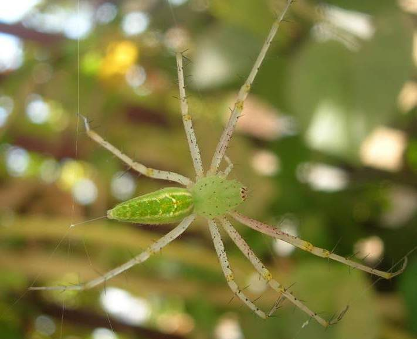

हरी मकड़ीGreen Lynx Spider
Peucetia viridana · Oxyopidae · SPD-0005

- Scientific name
- Peucetia viridana (Stoliczka, 1869)
- Family
- Oxyopidae
- Hindi
- हरी मकड़ी
- Status here
- native
- IUCN
- not evaluated
When to look कब देखें
Present all year.
हरी मकड़ी / Green Lynx Spider
Peucetia viridana (Stoliczka, 1869) — Oxyopidae
हरी मकड़ी — उत्तर प्रदेश के कृषि क्षेत्रों, बगीचों और जंगली वनस्पतियों पर पाई जाने वाली एक अत्यंत चमकीली हरे रंग की देशी मकड़ी है। यह कोई जाला (web) नहीं बनाती, बल्कि पौधों की पत्तियों और फूलों पर घात लगाकर बैठने (ambush) और अपने शिकार पर चीते की तरह लंबी छलांग लगाने के लिए जानी जाती है, जिसके कारण इसे 'लिंक्स स्पाइडर' (lynx spider) कहा जाता है। इसका चमकीला हरा रंग इसे पौधों के पत्तों में पूरी तरह से छिपने (camouflage) में मदद करता है। मादा मकड़ी अपने अंडों की रक्षा के लिए बहुत आक्रामक होती है और खतरे के समय बेहद करीब से अपने जहर को फेंकने (venom spitting) की अनोखी क्षमता रखती है। यह मकड़ी खेतों में हानिकारक कीटों को खाकर फसलों की रक्षा करने वाली एक महत्वपूर्ण मित्र जीव है।
Quick Identification त्वरित पहचान
| Feature | Description |
|---|---|
| Size & Shape | Medium-sized, slender spider; abdomen is tapered and elongated posteriorly |
| Colour | Brilliant emerald-green or yellowish-green; legs are pale green with numerous black spots and long, prominent black spines |
| Markings | Carapace has faint white and reddish lines; abdomen features yellowish-white longitudinal bands or chevron-like patterns |
| Eyes | Eight eyes arranged in a distinct hexagonal pattern on a slightly raised black tubercle, typical of lynx spiders |
| Spit | Females can eject tiny droplets of venom defensively at close range (up to 10–15 cm) if their egg sac is threatened |
Field tip: Look for a bright green spider with long, spine-covered legs sitting on crop leaves or flowers. It has a high-domed head with a hexagonal eye pattern and moves with rapid, jerky runs and jumps.
Morphology आकारिकी
Biometrics (typical measurements in the Gangetic plain):
| Measurement | Range |
|---|---|
| Body length (female) | 14–18 mm |
| Body length (male) | 10–12 mm |
| Leg span | 35–50 mm |
Dimorphism: Females are substantially larger and have a swollen, egg-filled abdomen. Males are smaller, highly active, and have longer legs relative to their body length.
Structure: The body is covered in fine pubescence. Carapace is high and rounded. The legs are pale green or yellow-green, distinctively marked with black spots and armed with exceptionally long, black, erect spines. The abdomen is slender, tapering to a point at the spinnerets.
Vocalisations
Spiders do not possess vocal chords and are generally silent.
- Sound production: Silent; does not produce audible sounds. During mating, males communicate via visual signaling (raising and waving forelegs) and substrate vibrations.
Behaviour & Ecology व्यवहार और पारिस्थितिकी
Peucetia viridana is a diurnal ambush predator. It does not spin a capture web, but may spin a few draglines or a nursery web. It sits motionless on green leaves or flowers, blending in perfectly. Its large, hexagonal-patterned eyes provide excellent vision, enabling it to detect prey and predators from several centimeters away. It captures prey by pouncing on them with rapid leaps.
Life Cycle / Phenology जीवन चक्र
- Nesting: The female constructs a spherical, papery egg sac that is light green or straw-colored. She attaches it securely to a leaf or twig and surrounds it with a protective maze of silk threads.
- Egg guarding: The female guards the egg sac aggressively, refusing to leave it and attacking any nearby threats. During this guarding period, she can spit venom defensively at intruders.
- Development: After hatching, the spiderlings remain inside a nursery web for a few days before dispersing using ballooning threads.
- Lifespan: Approximately 1 year.
Host Plants or Prey आहार
Primary food items:
- Pests: Consumes caterpillars, bugs, moths, aphids, and grasshopper nymphs.
- Pollinators: Occasional capture of honey bees (Apis cerana, [INS-0007]), flies, and small butterflies.
Predators / Natural Enemies शत्रु
- Parasitoids: Ichneumonid wasps that parasitize the egg sacs.
- Vertebrates: Small garden lizards ([REP-0001 Garden Lizard]), geckos, and insectivorous birds.
Agricultural / Human Relevance कृषि प्रासंगिकता
Farmer's Friend. The Green Lynx Spider is highly valued in agriculture as it consumes many pest insects in pigeonpea (Arhar), mustard, cotton, and vegetable crops in eastern Uttar Pradesh. It is non-aggressive to humans; the spitting of venom is a defensive reflex aimed at close intruders, which causes only minor local irritation if it contacts skin or eyes, but no systemic harm. Bites are harmless, causing only minor local itching.
Expected Locally स्थानीय रूप से अपेक्षित
Not a field record. Written from published accounts for eastern Uttar Pradesh. No confirmed local sighting yet — if you have seen it, that is what the atlas needs.
अभी तक स्थानीय पुष्टि नहीं। यह विवरण प्रकाशित स्रोतों से है, किसी अवलोकन से नहीं।
Commonly found in pigeonpea (Arhar), mustard, and cotton crops across Basti district. It is frequently observed on the large leaves of wild Calotropis (Madar, [FLR-0002 Calotropis]) bushes along field boundaries. Known locally as Hari Makdi.
Distribution वितरण
Global range: South and Southeast Asia, including India, Sri Lanka, and Myanmar.
In India: Widespread in agricultural states, particularly across Central and Northern India.
In Uttar Pradesh: Common in the plains and agricultural zones.
In Basti district / eastern UP: Abundant in village farmlands, orchards, and rural scrub margins.
Research Questions शोध प्रश्न
Anyone can investigate these | कोई भी इन प्रश्नों की जाँच कर सकता है
- How does the coloration of the host flower affect the hunting success of the Green Lynx Spider? — Observe capture rates on bright flowers vs. green leaves.
- What percentage of the Green Lynx Spider's diet consists of beneficial pollinators vs. crop pests in local pigeonpea fields? — Track prey captures over a week.
- Can you spot the hexagonal pattern of eyes on a Green Lynx Spider using a hand lens? / क्या आप आवर्धक लेंस (hand lens) का उपयोग करके हरी मकड़ी की आँखों के षट्कोणीय (hexagonal) पैटर्न को देख सकते हैं? — Examine live specimens on leaves without touching them.
- At what distance is the venom-spitting reflex of female Green Lynx Spiders triggered when an intruder approaches? — Measure the reaction distance using a long stick.
- Does the population density of Green Lynx Spiders increase in organic crop fields compared to pesticide-treated fields in Basti? / क्या बस्ती के कीटनाशक-युक्त खेतों की तुलना में जैविक खेतों में हरी मकड़ी की जनसंख्या घनत्व अधिक होती है? — Count spider density per square meter in different farms.
Similar Species मिलती-जुलती प्रजातियाँ
| Species | How to tell apart | हिंदी |
|---|---|---|
| Crab Spiders (Thomisidae) | Flattened body; first two pairs of legs are much longer and held out to the sides; lacks the prominent black leg spines | केकड़ा मकड़ी — चपटा शरीर, पैरों में लंबे कांटों का अभाव |
| Green Jumping Spider (e.g., Cosmophasis) | Much larger front eyes; shorter, stouter legs; moves in sudden leaps and walks in a jerky manner | हरी कूदने वाली मकड़ी — बड़ी सामने की आँखें, छोटे पैर |
| [INS-0002 Wandering Glider] | Yellowish-orange dragonfly with large wings; not a spider | पीली व्याधपतंग — उड़ने वाला कीट (मकड़ी नहीं) |
Field rule: Bright emerald-green body, long legs with prominent black spines, and active hunting on plant foliage identify Peucetia viridana.
Taxonomy & Classification वर्गीकरण
Original description. Ferdinand Stoliczka described this species as Sphasus viridanus in 1869 in the Journal of the Asiatic Society of Bengal (Part II, Volume 38, page 220). Type locality: Bengal, India. It was later transferred to the genus Peucetia by Thorell. The genus name Peucetia is from Greek mythology (Peucetia, a region in Italy), and viridana refers to its brilliant green color.
Subspecies. Monotypic.
Family and order placement. Placed in the order Araneae, family Oxyopidae (lynx spiders).
Phylogenetic notes. Peucetia viridana belongs to the Old World clade of the genus Peucetia, closely related to Peucetia viridans (Green Lynx Spider of the Americas).
IUCN status rationale. Not evaluated (NE). It is extremely common and widespread across South Asian agroecosystems.
Photo Gallery फोटो गैलरी
References संदर्भ
- Stoliczka, F. (1869). Contribution to the knowledge of Indian arachnoidea. Journal of the Asiatic Society of Bengal. Part II, 38, p. 220. [original description as Sphasus viridanus]
- Tikader, B.K. (1970). Spider fauna of Sikkim. Records of the Zoological Survey of India, 64, 1–83.
- Sheriff, M.A. & Sebastian, P.A. (2009). Spiders of India. Universities Press, Hyderabad, pp. 245–247.
- World Spider Catalog (2024). Peucetia viridana. Version 25.0. Bern: Natural History Museum.
- Santos, A.J. & Brescovit, A.D. (2001). A revision of the genus Peucetia in the Neotropical region. Insect Systematics & Evolution, 32(4), 387–413.
- GBIF Occurrence Data — Peucetia viridana, Uttar Pradesh (2010–2025).
Source file: species/fauna/spiders/green_lynx_spider.md